[TL;DR] base_v3 holds; contact filter and URDF guidance do not move it
Filter: null on direction, worse ADE
Guidance closed: feasibility not the bottleneck
VITRA converted; decide filter, ct / po05
Trainer validation vs step — direction cosine (left) · ADE ÷ zero-predictor ADE (right, 1.0 = zero predictor) · ctl / jit1m: v1 corpus, 6.00 eff ep at 110,996 steps · base_v2 / base_v3: v2 corpus, 4.14 eff ep at 110,996 · all runs complete · base_v3_trim: curve not pulled (its stratified read is on Results 2)
trainer val = in-training val loader, one basis per corpus (v1 zero 0.1306 m · v2 zero 0.1242 m) · the Results numbers come from ieval on stratified chunks, not from these curves
Method (1): the baseline recipe, ctl → base_v2 → base_v3
base_v2 changed eleven things at once; base_v3 changes one back.
lever
ctl
base_v2
base_v3
corpus
v1 · 5 datasets
v2 · 6 datasets · HOT3D 31 % of chunks
= base_v2
objects
cap 2 obj × 512 pts
cap 16 obj × 256 pts · parts×8 selection
= base_v2
validity
motion heuristic
dataset tracking flags
= base_v2
origin
hand centre
random within 1 m (jit1m)
= base_v2
history
H = 2 (0.1 / 0.2 s)
none
H = 2 — the one change
compute
16 × 2 H100 · 110,996 st = 6.00 ep
token-budget 8 × 4 H100 · 110,996 st = 4.14 ep
= base_v2 · job 7487 · 8.6 h
Recipe per base — 120M video-DiT, flow matching, T = 10 @ 10 Hz throughout; eff ep = steps × eff batch ÷ corpus
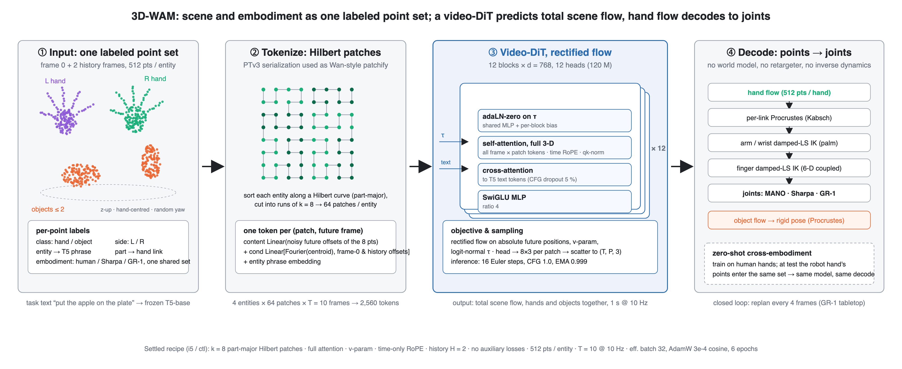
Trained architecture — one labelled point set (hands 512 pts, objects 256 pts, ≤ 16), k = 8 part-major Hilbert patches, full-attention video-DiT, flow matching, T = 10 @ 10 Hz
base_v2 / base_v3 configs: pull4/code configs · v2 corpus = all tracked objects + HOT3D, 901,728 chunks after validity · I-SERIES record: history for 3,400 steps beats no-history for 110,000
Filter arm base_v3_trim trained → Results 2 · VITRA mixture arm base_v3_vitra10 (vitra = 10 % of sampled chunks via dataset_fraction) · ICLR27 8022 · background lane · PENDING, unestimated start · +8.5 h compute once running
d = hand centroid → nearest object point · near < 5 cm · far > 20 cm · chunk = 11 fr @ 10 Hz · filter (train only): OakInk2 start 1.0 s / end 0.5 s, ARCTIC + GRAB end 0.5 s · rlwrld 158449
Full episodes · ground truth · one per dataset · 10 Hz
objects orange · R hand green · L hand purple · click to play · 18 clips in pull4/data_inspect_0905/clips, 3 per dataset (two TACO clips are Sharpa-retargeted; the one shown is human)
Results
Closed levers on the ctl basis
480 stratified chunks · every arm paired against ctl · 10k bootstrap
one positive lever (jit1m); contact λ, mix, 320M closed
New base + filter + 2× length: 2× trim beats zero; base_v3 > C2 > base_v2
GR-1 zero-shot closed loop · human → robot: URDF-guided sampling
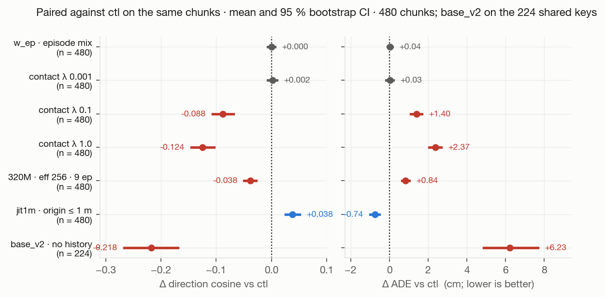
Paired vs ctl — ΔADE cm (right; the Δcos panel is legacy) · 95 % CI · n = 480
480 · 6 ep · ctl 9.10 / 56.9
ADE
Acc5
ΔADE vs ctl · cm
w_ep · ep-weighted mix
9.13
57.1
+0.04 [-0.08, +0.16]
contact λ 0.001
9.12
57.5
+0.03 [-0.15, +0.21]
contact λ 0.1
10.50
47.8
+1.40 [+1.10, +1.68]
contact λ 1.0
11.47
34.4
+2.37 [+2.04, +2.68]
320M · 9 ep
9.94
52.4
+0.84 [+0.66, +1.03]
jit1m · origin ≤ 1 m
8.36
59.6
-0.74 [-0.98, -0.50]
zero predictor: ADE 9.08 · Acc5 59.8 — only jit1m matches it
Closed · no ETA — no further arms on the ctl recipe; jit1m is carried into base_v2 / base_v3
New base + filter + 2× length: 2× trim beats zero; base_v3 > C2 > base_v2
standard metrics only (09-06) · kept-window val · 528 chunks · 5 draws · 5 s rollouts on 78 episodes
trim = base_v3 recipe, train index cut to the contact windows (89.9 % kept) · 7784 · 8.6 h
GR-1 zero-shot closed loop · human → robot: URDF-guided sampling
kept-window val · 528
ADE cm
Acc5 %
δavg %
ΔADE · cm
zero-motion predictor
8.41
62.0
59.9
—
base_v2 · no hist
10.53
50.0
49.9
+2.33 [+1.95, +2.71]
C2 · 109k
9.76
53.1
51.7
+1.55 [+1.25, +1.86]
base_v3 · 4.14 ep
8.20
58.9
56.9
—
trim · 4.14 ep
8.68
58.4
56.5
+0.47 [+0.23, +0.74]
trim 2× · 8.3 ep
7.47
62.4
59.8
−0.73 [−0.96, −0.51]
5 s rollout · 78 ep
ADE cm
δavg %
surv@5 s %
horizon s
stay-put reference
26.2
46.2
36.0
0.85
base_v2
19.0
36.4
23.7
0.9
C2
25.7
33.9
21.1
0.85
base_v3
20.4
37.9
24.7
0.8
base_v3_trim
19.4
38.7
26.4
0.9
base_v3_trim 2×
17.5
43.0
29.4
1.15
Read · 2× is the first arm below the zero predictor; 110k → 222k = −0.73 cm, +3.5 pp Acc5 on every dataset · all arms still below stay-put on δavg / survival · GR-1 sweep of 2× running
per-chunk means · Δ paired, 10k bootstrap, 95 % CI · standard metrics only since 09-06 · δ_avg, minADE₅, 5 s rollouts: jobs 8244–8248 · ctl + GR-1 tables: appendix
Results
Closed levers on the ctl basis
New base + filter + 2× length: 2× trim beats zero; base_v3 > C2 > base_v2
GR-1 zero-shot closed loop · human → robot: URDF-guided sampling
GR-1 base_v3: 2 / 116, median 23.5 cm — the stratified gain does not carry into the loop
guided = URDF projection inside the sampler, inference-only · 384 paired human / Sharpa TACO chunks
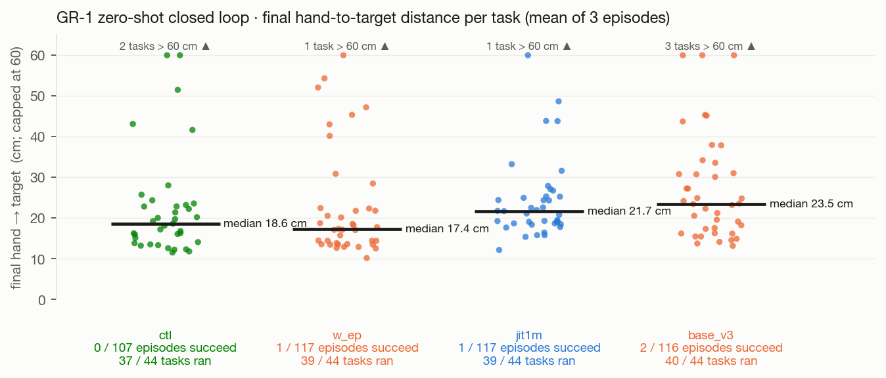
GR-1 sweeps — final hand → target per task (mean of 3 eps), bar = median · only the model varies · sweep table: appendix
sampler · 384 pairs
gap Sharpa − human
Δ vs unguided
IK resid.
unguided
−0.108 [−0.136, −0.082]
—
—
guided τ₀ 0.6 · hard
−0.101 [−0.129, −0.073]
+0.007 [+0.002, +0.012]
6.3 mm
guided τ₀ 0.3 · hard
−0.101
+0.007 [+0.002, +0.012]
5.6 mm
guided τ₀ 0.6 · 12 iters
−0.101
+0.007 [+0.002, +0.012]
6.2 mm
guided gradient η 0.5
—
+0.006 [+0.003, +0.009]
7.7 mm
coshand: Sharpa 0.178 unguided → 0.185 guided τ₀ 0.6, human 0.286 in every run · paired, 10k bootstrap · guidance 2.7 s per 8-chunk batch vs 20.6 s sampling
Closed at ≈ +0.007 hand cosine — feasibility is not the human → robot bottleneck; Sharpa predictions are nearly reachable but point the wrong way · next: contact-aware projection needs the contact-channel model (ct queued, unestimated) · the Sharpa gap is the lever
AR rollouts · 5 chunks · 5 s · base_v2 top · base_v3 bottom · 1 / 2
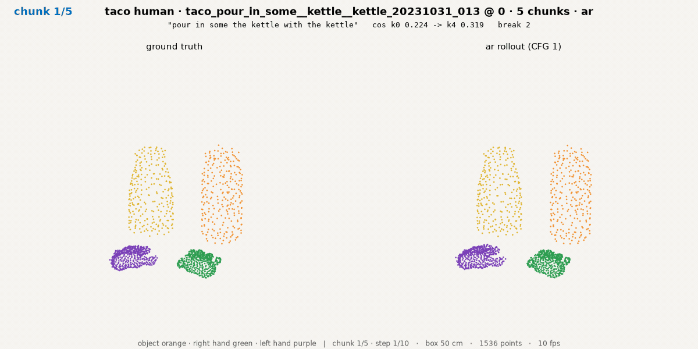
base_v2 · no history · 110,996 st · 4.14 ep · taco ep 5552 · “pour in some the kettle with the kettle” · ADE k0 1.4 → k4 15.5 cm
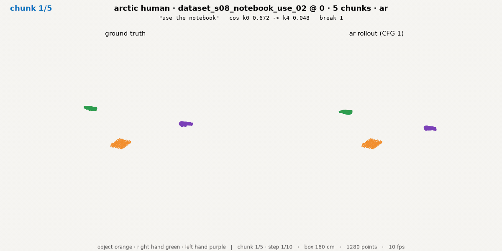
base_v2 · no history · 110,996 st · 4.14 ep · arctic ep 212 · “use the notebook” · ADE k0 14.4 → k4 29.4 cmbase_v2 · no history · 110,996 st · 4.14 ep · oakink2 ep 3035 · “Heat the test tube and put off the alcohol burner after …” · ADE k0 10.3 → k4 5.8 cmbase_v2 · no history · 110,996 st · 4.14 ep · grab ep 1434 · “lift the banana” · ADE k0 27.8 → k4 47.5 cm
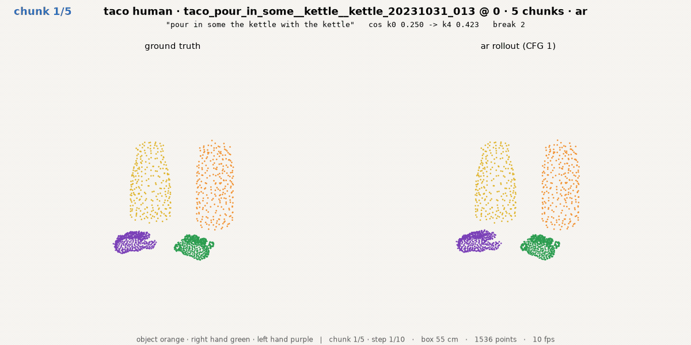
base_v3 · H = 2 · 110,996 st · 4.14 ep · taco ep 5552 · “pour in some the kettle with the kettle” · ADE k0 1.7 → k4 17.1 cm
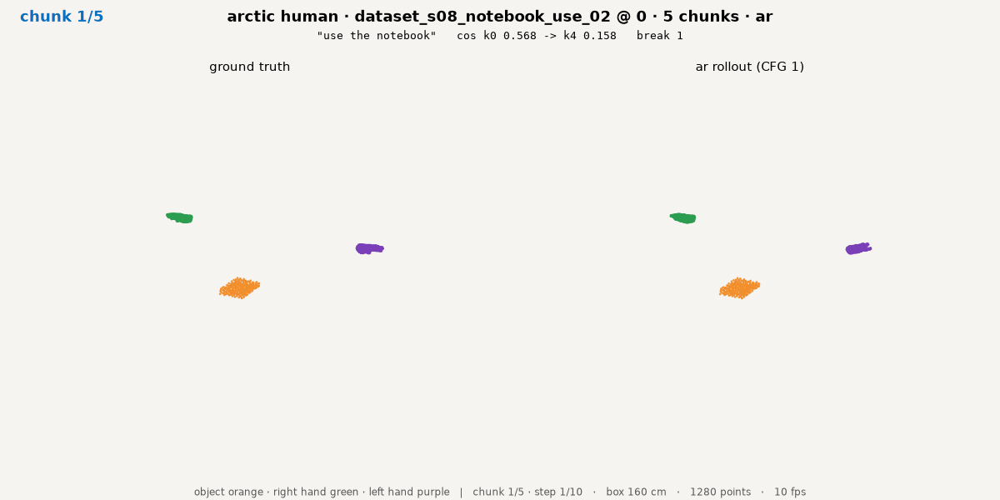
base_v3 · H = 2 · 110,996 st · 4.14 ep · arctic ep 212 · “use the notebook” · ADE k0 16.7 → k4 30.8 cm
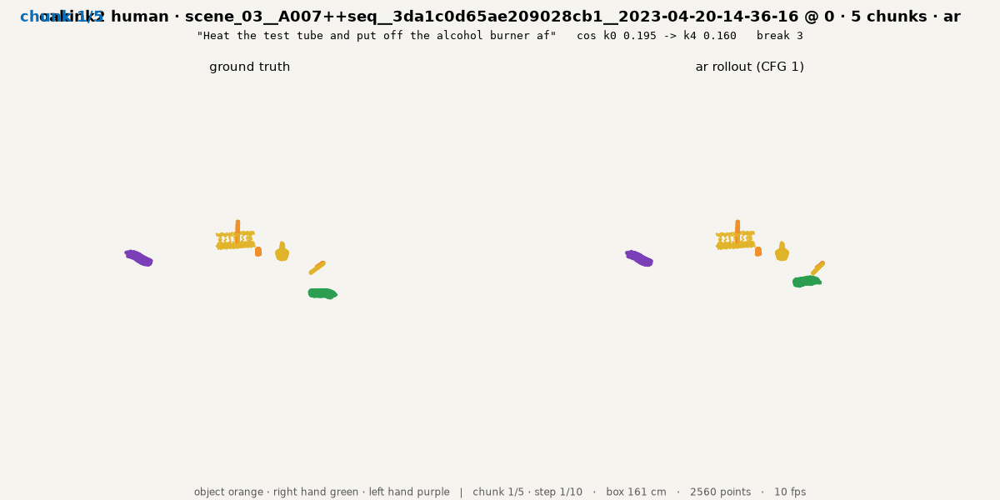
base_v3 · H = 2 · 110,996 st · 4.14 ep · oakink2 ep 3035 · “Heat the test tube and put off the alcohol burner after …” · ADE k0 13.6 → k4 5.7 cm
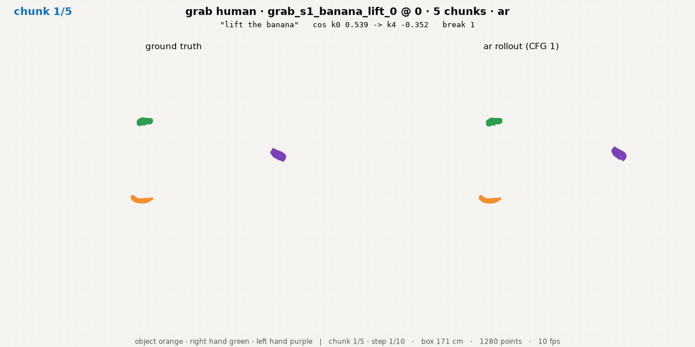
base_v3 · H = 2 · 110,996 st · 4.14 ep · grab ep 1434 · “lift the banana” · ADE k0 27.6 → k4 32.4 cm
GT left · pred right · objects orange · R hand green · L hand purple · each chunk starts from the previous prediction · same episodes, seed, camera in both rows · DexYCB: no 5-chunk eps
AR rollouts · 5 chunks · 5 s · base_v2 top · base_v3 bottom · 2 / 2
base_v2 · no history · 110,996 st · 4.14 ep · taco ep 6147 · “scrape off the plate with the spoon” · ADE k0 3.2 → k4 12.8 cm
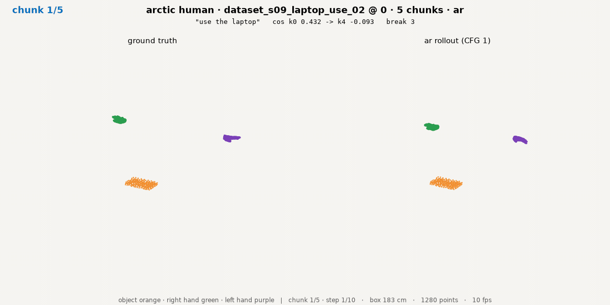
base_v2 · no history · 110,996 st · 4.14 ep · arctic ep 236 · “use the laptop” · ADE k0 31.2 → k4 15.9 cmbase_v2 · no history · 110,996 st · 4.14 ep · oakink2 ep 3059 · “Heat the beaker, put off the alcohol burner after heating, …” · ADE k0 7.8 → k4 6.5 cmbase_v2 · no history · 110,996 st · 4.14 ep · grab ep 2219 · “browse the camera” · ADE k0 34.4 → k4 64.8 cm
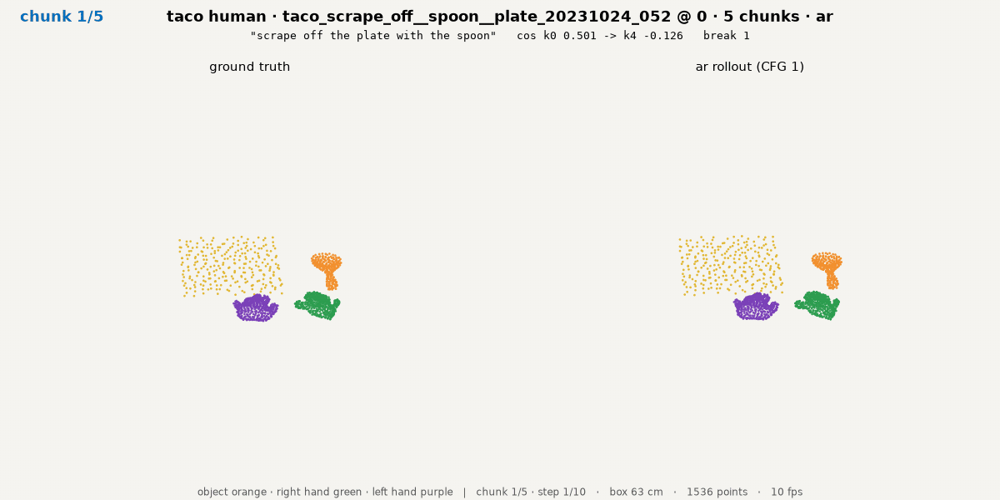
base_v3 · H = 2 · 110,996 st · 4.14 ep · taco ep 6147 · “scrape off the plate with the spoon” · ADE k0 3.5 → k4 12.5 cm
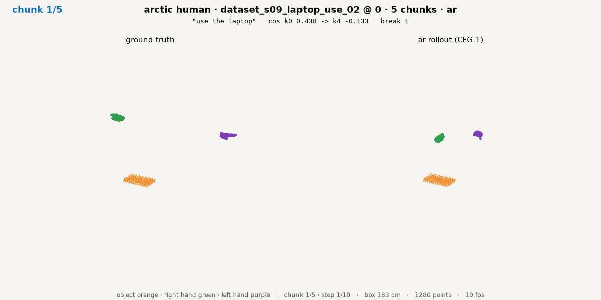
base_v3 · H = 2 · 110,996 st · 4.14 ep · arctic ep 236 · “use the laptop” · ADE k0 41.0 → k4 14.9 cm
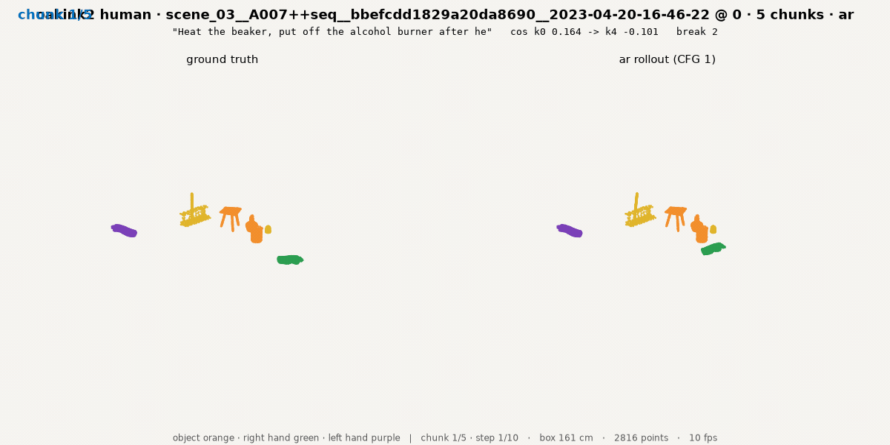
base_v3 · H = 2 · 110,996 st · 4.14 ep · oakink2 ep 3059 · “Heat the beaker, put off the alcohol burner after heating, …” · ADE k0 11.0 → k4 9.1 cm
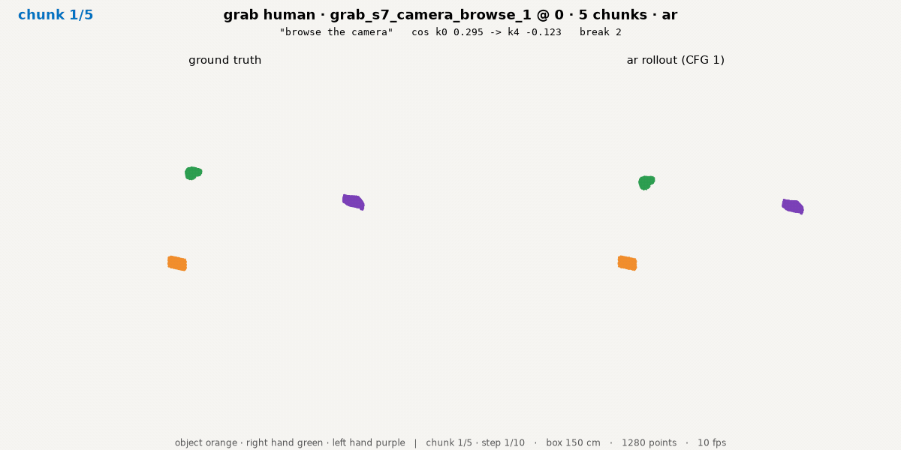
base_v3 · H = 2 · 110,996 st · 4.14 ep · grab ep 2219 · “browse the camera” · ADE k0 24.9 → k4 65.6 cm
GT left · pred right · objects orange · R hand green · L hand purple · each chunk starts from the previous prediction · same episodes, seed, camera in both rows · drift.json per arm
Single chunk · 1 s · base_v2 top · base_v3 bottom · 1 / 2
base_v2 · 110,996 st · 4.14 ep · taco chunk 40693 · “dust the kettle with the roller” · ADE 13.0 cmbase_v2 · 110,996 st · 4.14 ep · arctic chunk 3772 · “use the ketchup” · ADE 54.5 cmbase_v2 · 110,996 st · 4.14 ep · dexycb chunk 4142 · “grasp the tomato soup can” · ADE 15.4 cmbase_v2 · 110,996 st · 4.14 ep · oakink2 chunk 35323 · “Place the asbestos mesh for heating, ignite the alco…” · ADE 2.0 cmbase_v2 · 110,996 st · 4.14 ep · grab chunk 6998 · “inspect the elephant” · ADE 69.4 cm
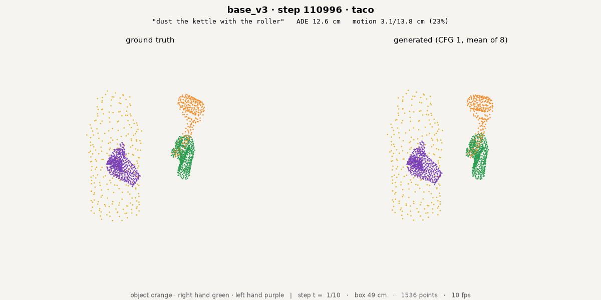
base_v3 · 110,996 st · 4.14 ep · taco chunk 40693 · “dust the kettle with the roller” · ADE 12.6 cm
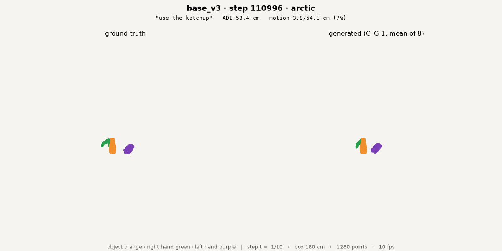
base_v3 · 110,996 st · 4.14 ep · arctic chunk 3772 · “use the ketchup” · ADE 53.4 cm
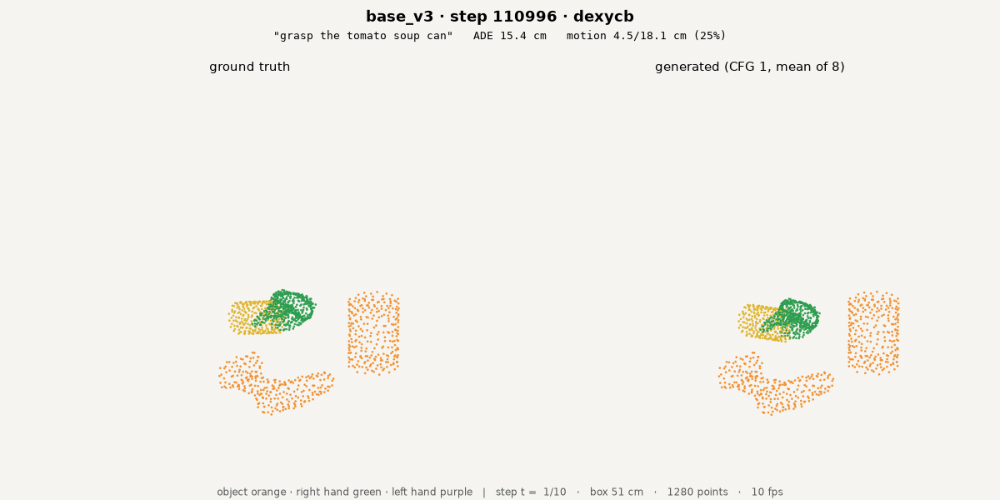
base_v3 · 110,996 st · 4.14 ep · dexycb chunk 4142 · “grasp the tomato soup can” · ADE 15.4 cm
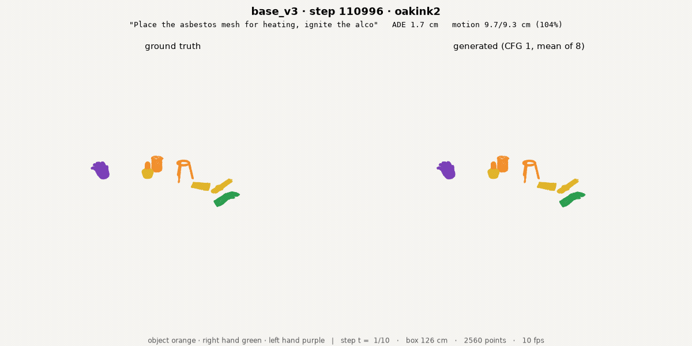
base_v3 · 110,996 st · 4.14 ep · oakink2 chunk 35323 · “Place the asbestos mesh for heating, ignite the alco…” · ADE 1.7 cm
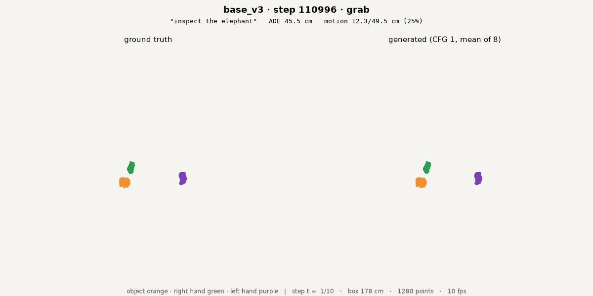
base_v3 · 110,996 st · 4.14 ep · grab chunk 6998 · “inspect the elephant” · ADE 45.5 cm
GT left · pred right · objects orange · R hand green · L hand purple · 2 most dynamic of 40 val chunks per dataset · k = 8 samples · cfg 1.0 · same chunks, seed, camera in both rows
Single chunk · 1 s · base_v2 top · base_v3 bottom · 2 / 2
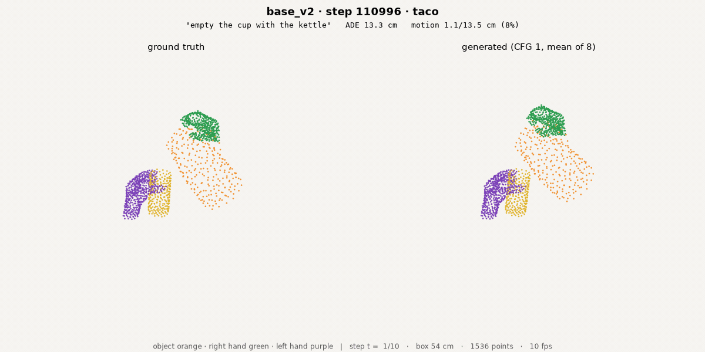
base_v2 · 110,996 st · 4.14 ep · taco chunk 41942 · “empty the cup with the kettle” · ADE 13.3 cm
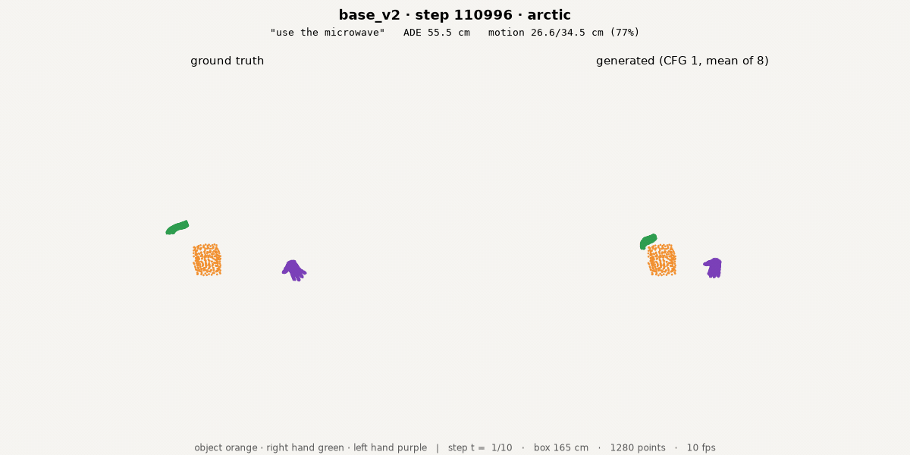
base_v2 · 110,996 st · 4.14 ep · arctic chunk 407 · “use the microwave” · ADE 55.5 cm
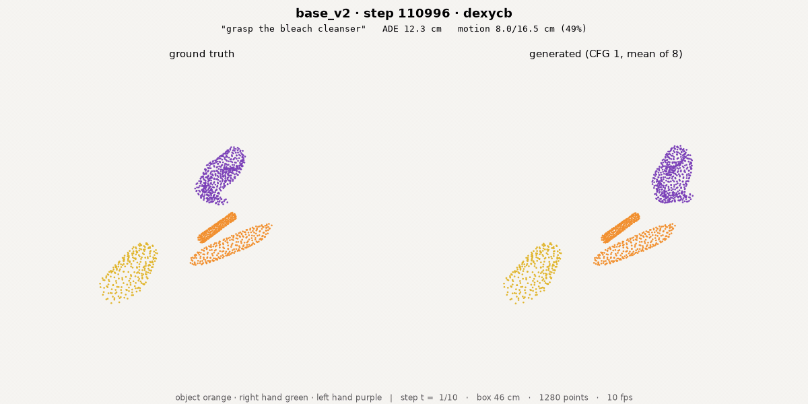
base_v2 · 110,996 st · 4.14 ep · dexycb chunk 4320 · “grasp the bleach cleanser” · ADE 12.3 cmbase_v2 · 110,996 st · 4.14 ep · oakink2 chunk 37412 · “Ignite the alcohol burner.” · ADE 7.8 cmbase_v2 · 110,996 st · 4.14 ep · grab chunk 9342 · “shake the water bottle” · ADE 26.3 cm
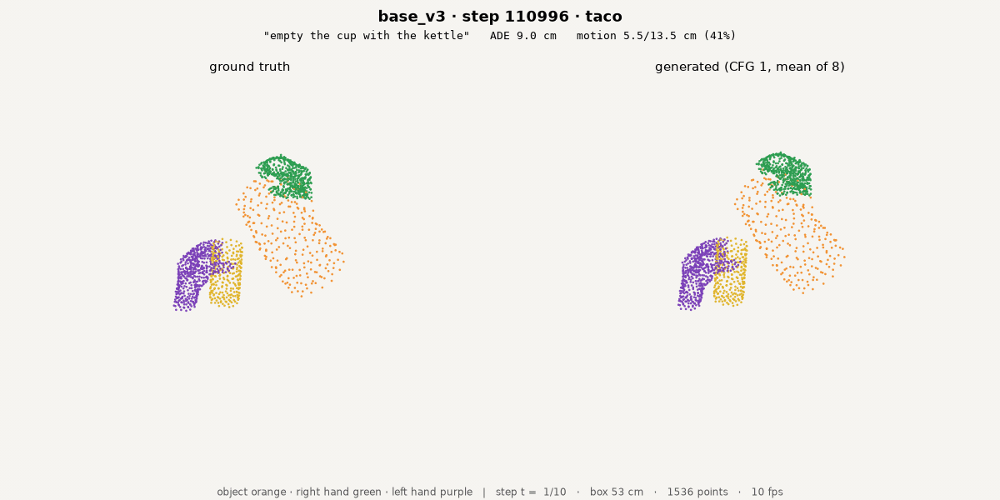
base_v3 · 110,996 st · 4.14 ep · taco chunk 41942 · “empty the cup with the kettle” · ADE 9.0 cm
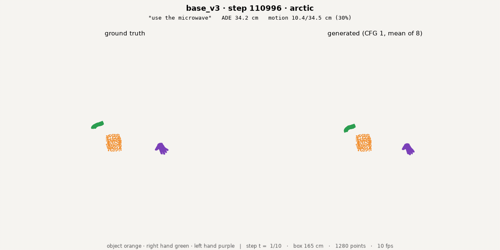
base_v3 · 110,996 st · 4.14 ep · arctic chunk 407 · “use the microwave” · ADE 34.2 cm
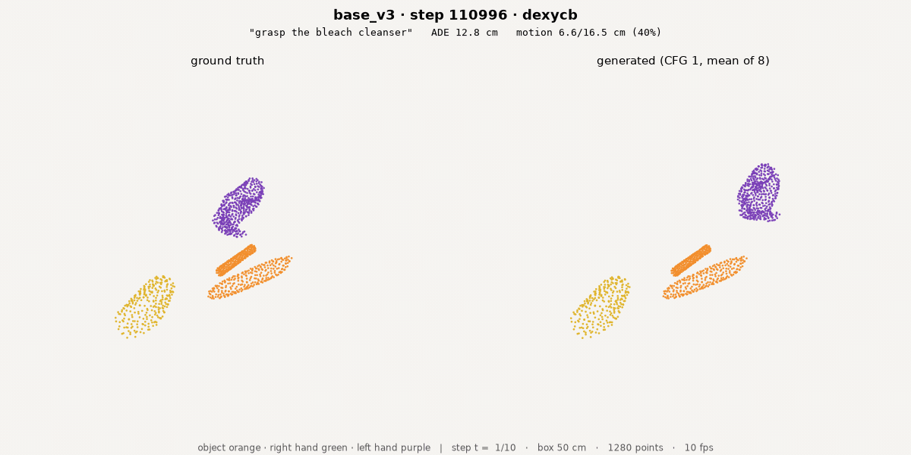
base_v3 · 110,996 st · 4.14 ep · dexycb chunk 4320 · “grasp the bleach cleanser” · ADE 12.8 cm
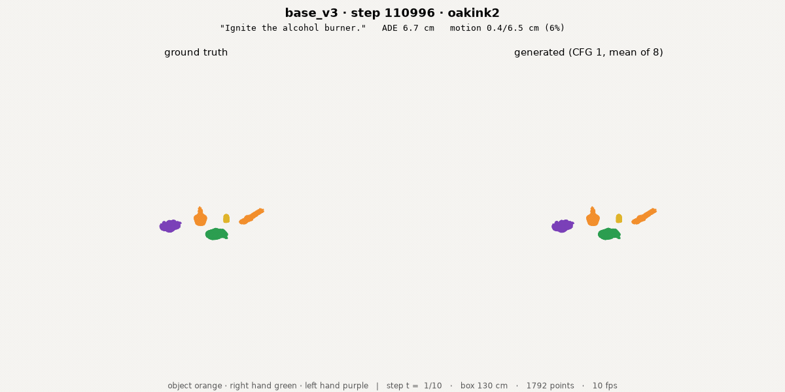
base_v3 · 110,996 st · 4.14 ep · oakink2 chunk 37412 · “Ignite the alcohol burner.” · ADE 6.7 cm
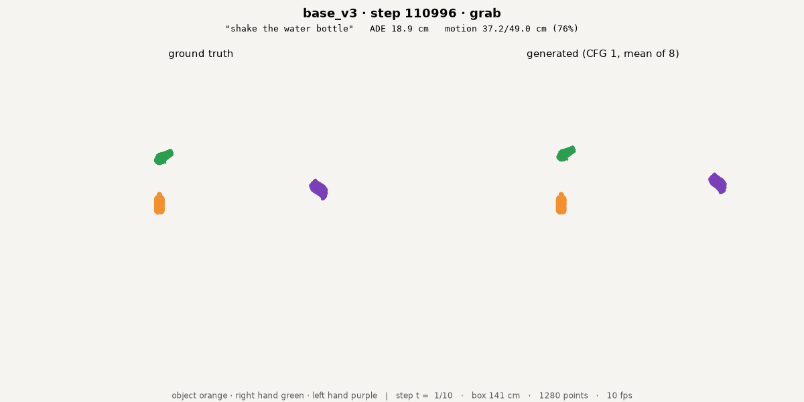
base_v3 · 110,996 st · 4.14 ep · grab chunk 9342 · “shake the water bottle” · ADE 18.9 cm
GT left · pred right · objects orange · R hand green · L hand purple · 2 most dynamic of 40 val chunks per dataset · k = 8 samples · cfg 1.0 · same chunks, seed, camera in both rows
Single chunk · 1 s · base_v3_trim · kept-window chunks
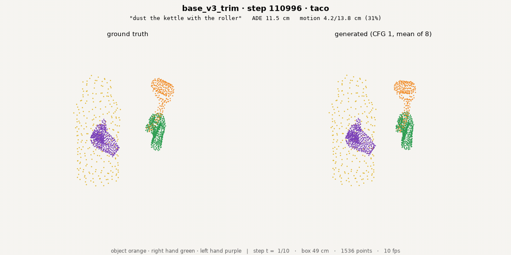
base_v3_trim · 110,996 st · 4.14 ep · single chunk · 1 s · taco chunk 40693 · “dust the kettle with the roller” · ADE 11.5 cm
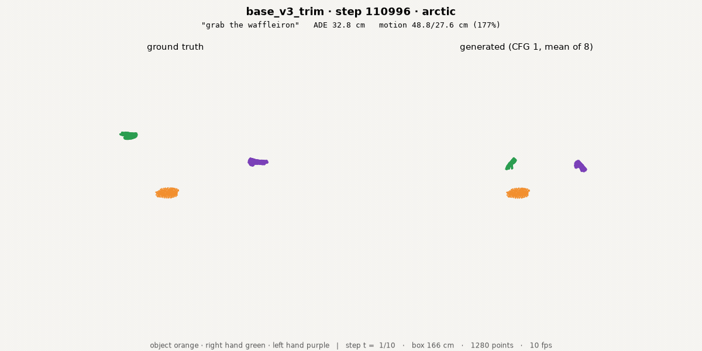
base_v3_trim · 110,996 st · 4.14 ep · single chunk · 1 s · arctic chunk 413 · “grab the waffleiron” · ADE 32.8 cm
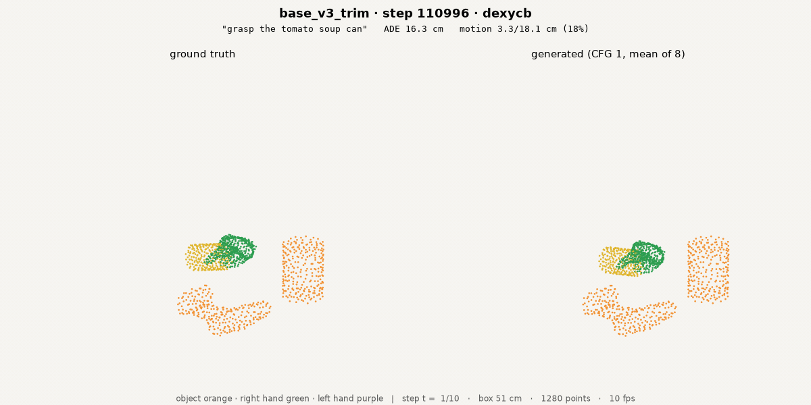
base_v3_trim · 110,996 st · 4.14 ep · single chunk · 1 s · dexycb chunk 4142 · “grasp the tomato soup can” · ADE 16.3 cm
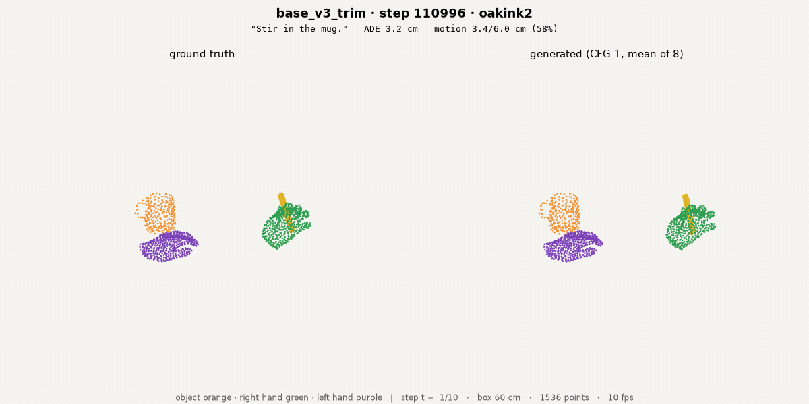
base_v3_trim · 110,996 st · 4.14 ep · single chunk · 1 s · oakink2 chunk 28115 · “Stir in the mug.” · ADE 3.2 cm
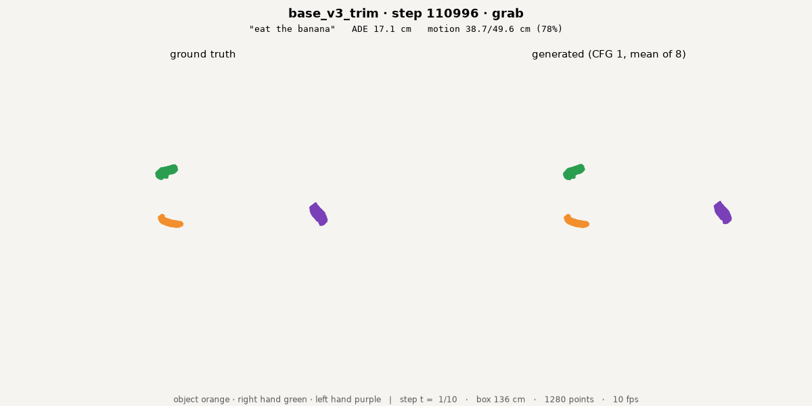
base_v3_trim · 110,996 st · 4.14 ep · single chunk · 1 s · grab chunk 4987 · “eat the banana” · ADE 17.1 cm
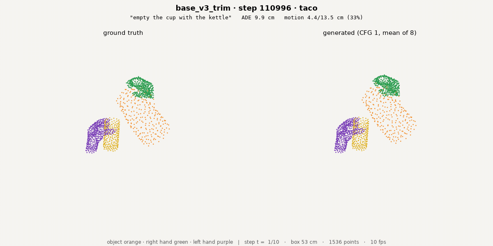
base_v3_trim · 110,996 st · 4.14 ep · single chunk · 1 s · taco chunk 41942 · “empty the cup with the kettle” · ADE 9.9 cm
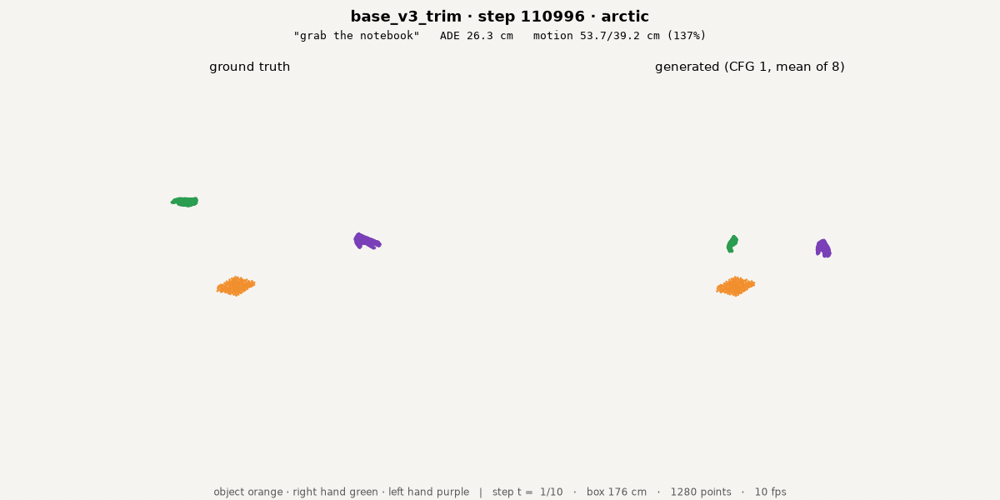
base_v3_trim · 110,996 st · 4.14 ep · single chunk · 1 s · arctic chunk 1247 · “grab the notebook” · ADE 26.4 cm
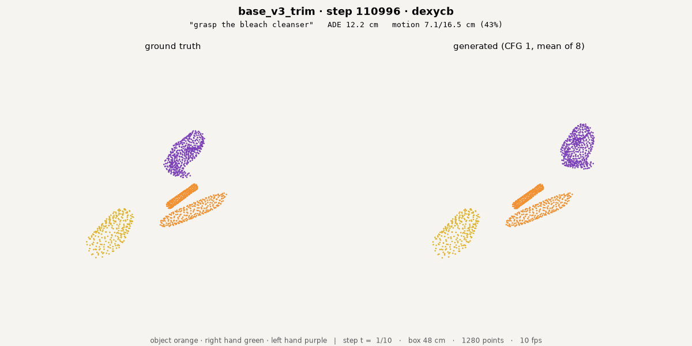
base_v3_trim · 110,996 st · 4.14 ep · single chunk · 1 s · dexycb chunk 4320 · “grasp the bleach cleanser” · ADE 12.2 cm
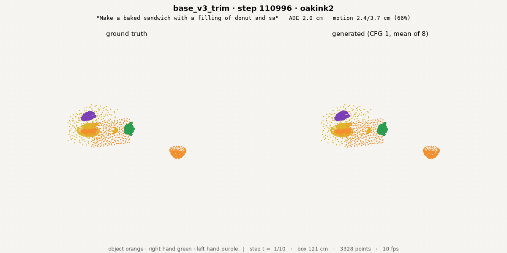
base_v3_trim · 110,996 st · 4.14 ep · single chunk · 1 s · oakink2 chunk 26392 · “Make a baked sandwich with a filling of donut and sa…” · ADE 2.0 cm
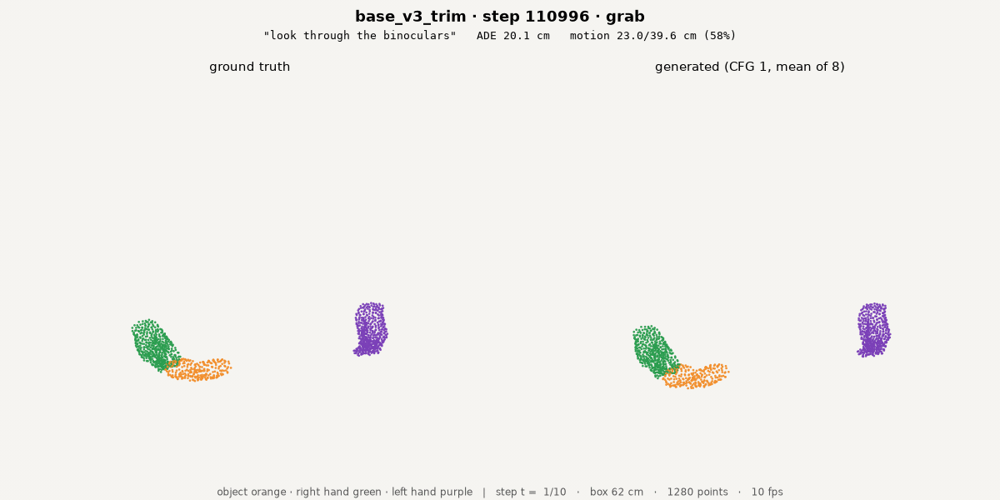
base_v3_trim · 110,996 st · 4.14 ep · single chunk · 1 s · grab chunk 5319 · “look through the binoculars” · ADE 20.1 cm
base_v3 · same chunks · next slide
base_v3 · same chunks · next slide
base_v3 · same chunks · next slide
base_v3 · same chunks · next slide
base_v3 · same chunks · next slide
GT left · pred right · objects orange · R hand green · L hand purple · chunks chosen inside the contact windows · k = 8 · cfg 1.0 · eff ep on the full v2 corpus (4.61 on the kept index)
Single chunk · 1 s · base_v3 · same kept-window chunks
base_v3 · 110,996 st · 4.14 ep · single chunk · 1 s · taco chunk 40693 · “dust the kettle with the roller” · ADE 12.6 cm
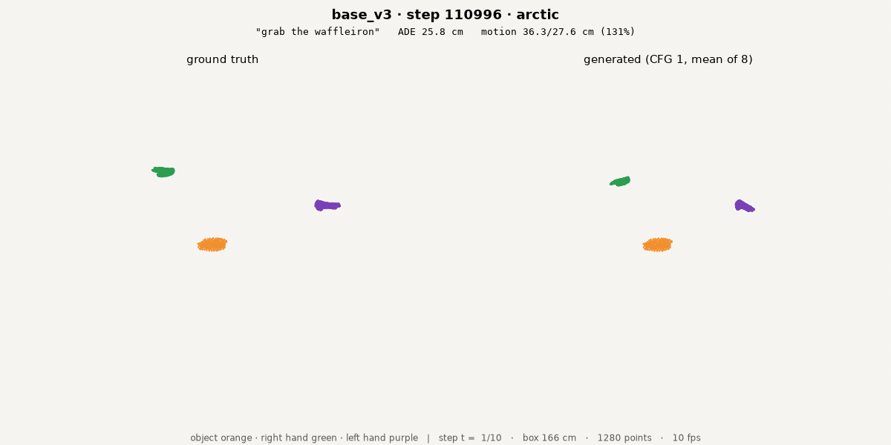
base_v3 · 110,996 st · 4.14 ep · single chunk · 1 s · arctic chunk 413 · “grab the waffleiron” · ADE 25.9 cmbase_v3 · 110,996 st · 4.14 ep · single chunk · 1 s · dexycb chunk 4142 · “grasp the tomato soup can” · ADE 15.4 cm
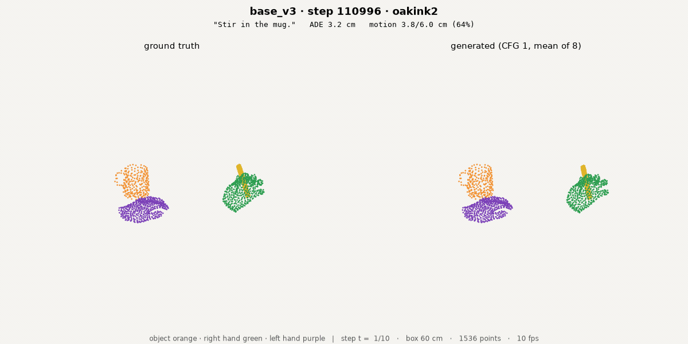
base_v3 · 110,996 st · 4.14 ep · single chunk · 1 s · oakink2 chunk 28115 · “Stir in the mug.” · ADE 3.2 cm
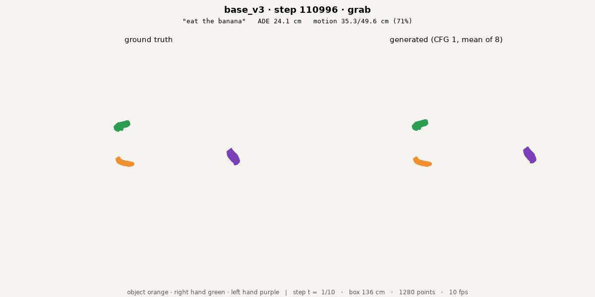
base_v3 · 110,996 st · 4.14 ep · single chunk · 1 s · grab chunk 4987 · “eat the banana” · ADE 24.1 cmbase_v3 · 110,996 st · 4.14 ep · single chunk · 1 s · taco chunk 41942 · “empty the cup with the kettle” · ADE 9.0 cm
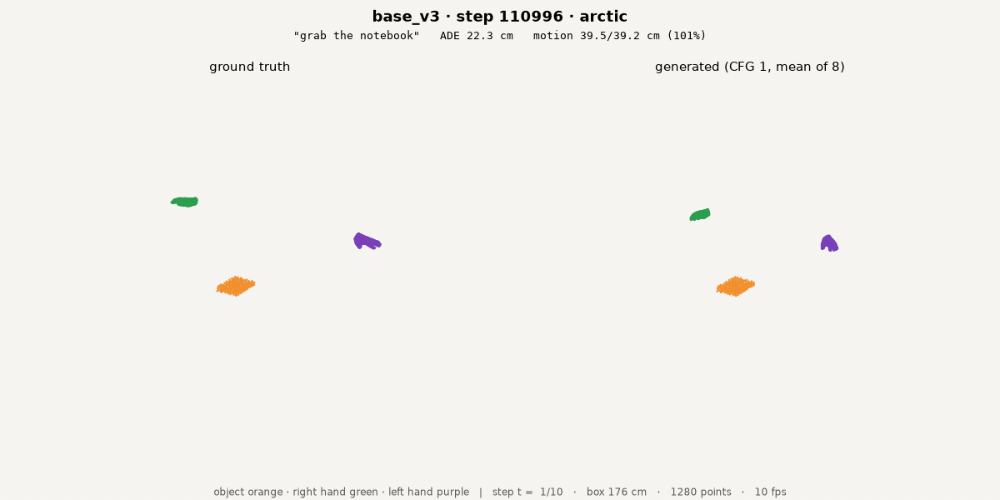
base_v3 · 110,996 st · 4.14 ep · single chunk · 1 s · arctic chunk 1247 · “grab the notebook” · ADE 22.4 cmbase_v3 · 110,996 st · 4.14 ep · single chunk · 1 s · dexycb chunk 4320 · “grasp the bleach cleanser” · ADE 12.8 cm
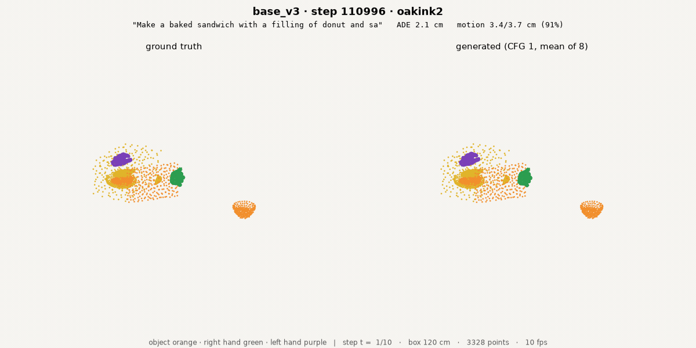
base_v3 · 110,996 st · 4.14 ep · single chunk · 1 s · oakink2 chunk 26392 · “Make a baked sandwich with a filling of donut and sa…” · ADE 2.1 cm
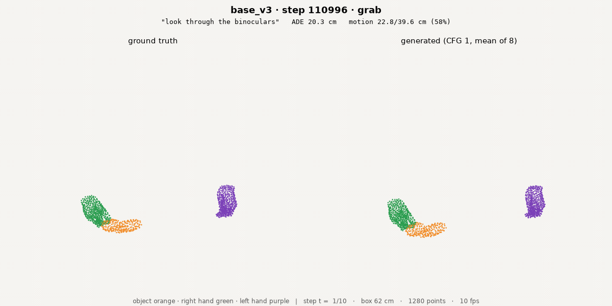
base_v3 · 110,996 st · 4.14 ep · single chunk · 1 s · grab chunk 5319 · “look through the binoculars” · ADE 20.3 cm
GT left · pred right · objects orange · R hand green · L hand purple · same chunk ids, camera and seed as the base_v3_trim slide before · k = 8 · cfg 1.0
AR rollouts · 5 chunks · 5 s · base_v3_trim
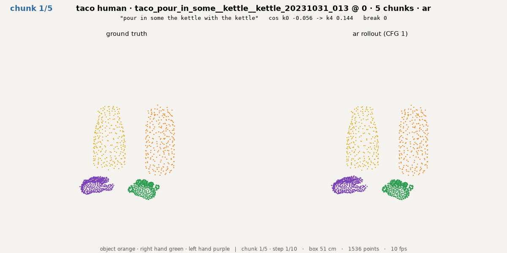
base_v3_trim · H = 2 · 110,996 st · 4.14 ep · AR 5 chunks · taco ep 5552 · “pour in some the kettle with the kettle” · ADE k0 1.5 → k4 23.0 cm
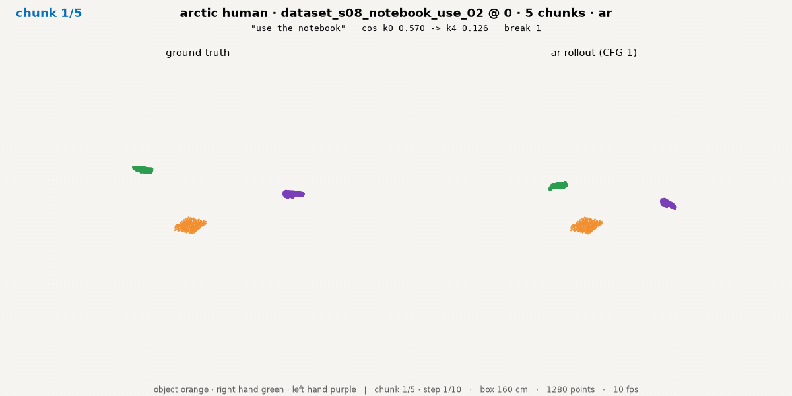
base_v3_trim · H = 2 · 110,996 st · 4.14 ep · AR 5 chunks · arctic ep 212 · “use the notebook” · ADE k0 21.6 → k4 28.2 cm
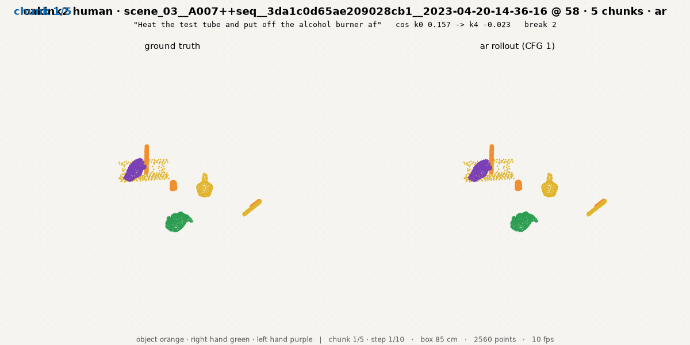
base_v3_trim · H = 2 · 110,996 st · 4.14 ep · AR 5 chunks · oakink2 ep 3035 · “Heat the test tube and put off the alcohol burner after …” · ADE k0 1.0 → k4 10.4 cm
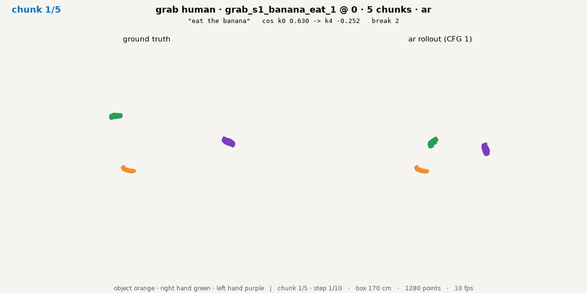
base_v3_trim · H = 2 · 110,996 st · 4.14 ep · AR 5 chunks · grab ep 1433 · “eat the banana” · ADE k0 31.0 → k4 12.3 cm
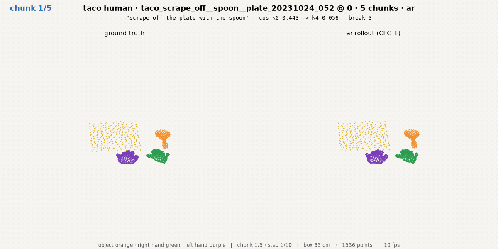
base_v3_trim · H = 2 · 110,996 st · 4.14 ep · AR 5 chunks · taco ep 6147 · “scrape off the plate with the spoon” · ADE k0 3.5 → k4 9.4 cm
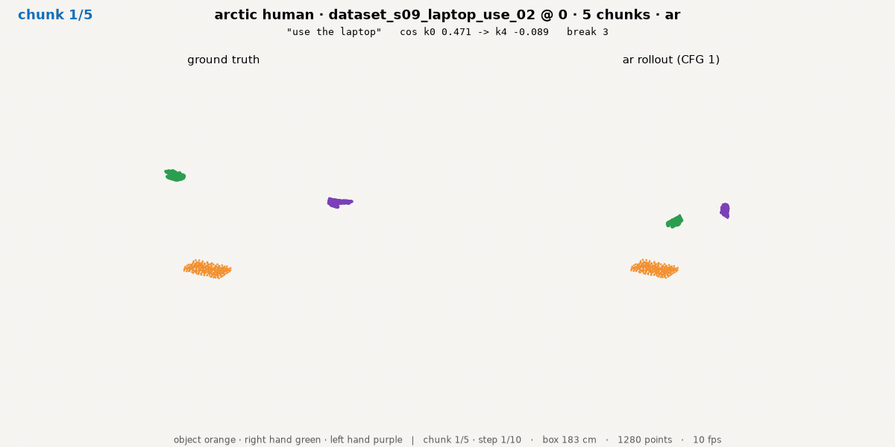
base_v3_trim · H = 2 · 110,996 st · 4.14 ep · AR 5 chunks · arctic ep 236 · “use the laptop” · ADE k0 45.6 → k4 17.4 cmbase_v3_trim · H = 2 · 110,996 st · 4.14 ep · AR 5 chunks · oakink2 ep 3059 · “Heat the beaker, put off the alcohol burner after heating, …” · ADE k0 2.4 → k4 15.8 cmbase_v3_trim · H = 2 · 110,996 st · 4.14 ep · AR 5 chunks · grab ep 2184 · “inspect the medium torus” · ADE k0 41.0 → k4 52.2 cm
base_v3 · same episodes · next slide
base_v3 · same episodes · next slide
base_v3 · same episodes · next slide
base_v3 · same episodes · next slide
GT left · pred right · objects orange · R hand green · L hand purple · each chunk starts from the previous prediction · seed 20260904 as in the base_v3 rows · DexYCB: no 5-chunk eps
AR rollouts · 5 chunks · 5 s · base_v3 · same episodes
base_v3 · H = 2 · 110,996 st · 4.14 ep · AR 5 chunks · taco ep 5552 · “pour in some the kettle with the kettle” · ADE k0 1.7 → k4 17.1 cmbase_v3 · H = 2 · 110,996 st · 4.14 ep · AR 5 chunks · arctic ep 212 · “use the notebook” · ADE k0 16.7 → k4 30.8 cmbase_v3 · H = 2 · 110,996 st · 4.14 ep · AR 5 chunks · oakink2 ep 3035 · “Heat the test tube and put off the alcohol burner after …” · ADE k0 13.6 → k4 5.7 cmbase_v3 · H = 2 · 110,996 st · 4.14 ep · AR 5 chunks · grab ep 1433 · “eat the banana”base_v3 · H = 2 · 110,996 st · 4.14 ep · AR 5 chunks · taco ep 6147 · “scrape off the plate with the spoon” · ADE k0 3.5 → k4 12.5 cmbase_v3 · H = 2 · 110,996 st · 4.14 ep · AR 5 chunks · arctic ep 236 · “use the laptop” · ADE k0 41.0 → k4 14.9 cmbase_v3 · H = 2 · 110,996 st · 4.14 ep · AR 5 chunks · oakink2 ep 3059 · “Heat the beaker, put off the alcohol burner after heating, …” · ADE k0 11.0 → k4 9.1 cmbase_v3 · H = 2 · 110,996 st · 4.14 ep · AR 5 chunks · grab ep 2184 · “inspect the medium torus”
GT left · pred right · objects orange · R hand green · L hand purple · same episodes, start frames and seed as the base_v3_trim slide before · DexYCB: no 5-chunk eps
Summary · running / due / your decisions · 2026-09-06 10:00 KST
Filter null on direction; guidance saturated; VITRA converted; 2× running.
A · running
progress · target
lands
base_v3_trim 2× 8003
→ 221,992 st · 115k at 09:48
Sun ≈18:00 KST (+8 h)
base_v3_vitra10 8022
PENDING · vitra 10 %
unestimated
base_v2_ct 7353
PENDING since 09-05
unestimated
base_v2_po05 7354
PENDING since 09-05
unestimated
B · due, no input
work
when
kept-window read
local, 528 chunks mapped · README
done 11:05 KST
2× eval + deck
+30 min after landing
≈18:30 KST (+8.5 h)
vitra10 eval
+8.5 h after start
unestimated
GR-1 · guidance · VITRA
harvested
this deck
C · your decisions
options
recommendation · deadline
1 · keep the filter?
keep · drop · wait for the 2× read
drop · kept-window: Δcos +0.005 (null), ΔADE +0.45 cm; removed phases lost (−0.125 cos) · re-base the 2× length arm on base_v3
2 · ct / po05
finish on base_v2 (no history) · cancel, rerun on base_v3
cancel, rerun on base_v3 · 4th day pending · today
3 · VITRA L-hand · GR-1 objects
resolve the L-hand convention or ship R-hand only · GR-1 arm: all scene objects vs two
your call · Sun
ETA at a glance · kept-window read done · 2× lands ≈18:00 (+8 h), its eval + deck ≈18:30 · vitra10 / ct / po05 unestimated (background lane)
grey italic = not landed · silence defaults to the recommendation · 8003 / 8022 / 7353 / 7354 = ICLR27 jobs; 8003 normal 4×H100, the rest background · base_v3_trim = 7784 weights_final.pt
Appendix · tables moved from the main flow (rev 2 → rev 3)
ctl-basis parity on the 224 shared keys · GR-1 sweep table — unchanged from rev 2
same chunks (arctic 96 · grab 96 · dexycb 32) · ctl on v1 points, the rest on v2 · zero moves +0.73 cm · paired, 10k bootstrap
GR-1 sweep · model
tasks ran
episodes
successes
median cm
0904 · ctl · 6.00 ep
37 / 44
107
0
18.6
0904 · w_ep · 6.00 ep
39 / 44
117
1
17.4
0905 · jit1m · 6.00 ep
39 / 44
117
1
21.7
— · base_v2 · 4.14 ep
not swept · MuJoCo smoke only
0905 · base_v3 · 4.14 ep
40 / 44
116
2
23.5
base_v3 by target: object-target 2 / 71, median 18.5 cm · fixture-target (drawer / cabinet / microwave) 0 / 45, 31.5 cm
median over tasks of the per-task mean · sim-fail tasks excluded · paired vs jit1m: closer on 17 tasks, farther on 22 · rlwrld 158806
both tables sat on Results 2 / 3 in rev 2 · moved to hold the ≤ 8 main-slide cap · base_v2 smoke: P = 1,536, 90 replans, rc 0
Appendix · notes on the record (2026-09-05 → 09-06)
C2 on the ctl (v1) basis, 480 chunks — C2 cos 0.255, ADE 9.34, zero 9.08 (ctl 0.270 / 9.10 / 9.08); paired C2 − ctl Δcos −0.015 [−0.023, −0.008], ΔADE +0.24 cm [+0.09, +0.38]. C2 was trained with ≤ 2 objects at train time and is queried here with the v1 / v2 loaders unchanged.
C2 transfer — the rlwrld checkpoint (hist_long, step 109,228) was stripped of its optimizer state to 915 MiB (rlwrld 158333) before the local → ICLR27 hop; evaluated as ICLR27 7626 (v1 basis) and 7627 (v2 basis).
Eval QoS queue — 2–3 h waits on the ICLR27 eval QoS (Sep 5 evening, Sep 6 morning); evals move to the normal QoS whenever it is free (base_v3 evals 7759 / 7760 / 7761 ran there); the kept-window evals are in the eval queue.
Fixed bugs — FRESH-on-requeue: a preempted job restarted from scratch instead of its checkpoint (base_v2_ct lost 62k steps, resumed from 50k as 7353); the requeue path now resumes from the latest checkpoint. set -e seeding: base_v3's first launch (7459) died in 1 s; relaunched as 7487. VITRA JSON numpy crash: the converter's report writer choked on numpy scalars; fixed before the 89,834-episode run.
VITRA left-hand MANO convention unresolved — 24 candidate conventions (axis flips / mirror / rotation order) all leave 18–29 mm keypoint residual, so left hands were dropped (86,195) and episodes needing them failed (10,166); the right hand is exact. Source frame rates are assumed (Ego4D 30 · EPIC 50 · SSv2 12): the groups carry no fps attribute.
Appendix · notes on the record (continued)
base_v3_trim units — same 110,996 steps and batch as base_v3; eff ep is 4.14 on the full v2 corpus and 4.61 on its own 89.9 % kept index; the deck quotes 4.14 so the two arms share an axis. Its val is the unfiltered 528-chunk set; trainer val motion ratio 97–99 % of truth vs 86–87 % for base_v3. Guided-sampling rows marked "—" report only the paired gap / Δ; the Sharpa absolute was not exported for those runs.
PnPAppleToPlate broken since the 09-03 sweep — robocasa raises "No valid categories … ['coffee_pod']" at reset; one of the 5–7 sim-fail tasks per sweep (with PnPCounterToPan, PnPCupToDishRackUpperLevel, PnPVegetableBowlToPlate and one or two sweep-specific failures).
Chunk keys re-indexed in v2 — taco and oakink2 chunk ids changed with the v2 corpus, so the paired test against ctl runs on the 224 keys shared by both evals (arctic 96, grab 96, dexycb 32); the 432 / 528 numbers are unpaired against ctl. TACO generated text glitches ("pour in some the kettle with the kettle") are the training text, shown verbatim.
![Two line charts of trainer validation versus training step for five arms, all complete to 110,996 steps. Left: direction cosine. ctl and jit1m rise from about 0.24 and 0.17 at 2,500 steps to 0.51 and 0.48 at 110,996; base_v3 rises from 0.17 to 0.44; base_v2 stays between 0.00 and 0.13 for the whole run; base_v2_po05 tracks base_v2 up to 37,500 steps. Right: ADE divided by the zero-predictor ADE with a dotted line at 1.0. ctl and jit1m fall from 1.07 to 0.84 and 0.81; base_v3 falls from 1.04 to 0.98 at the end; base_v2 rises from 1.10 to 1.21.](assets/fig_valcurves.png)